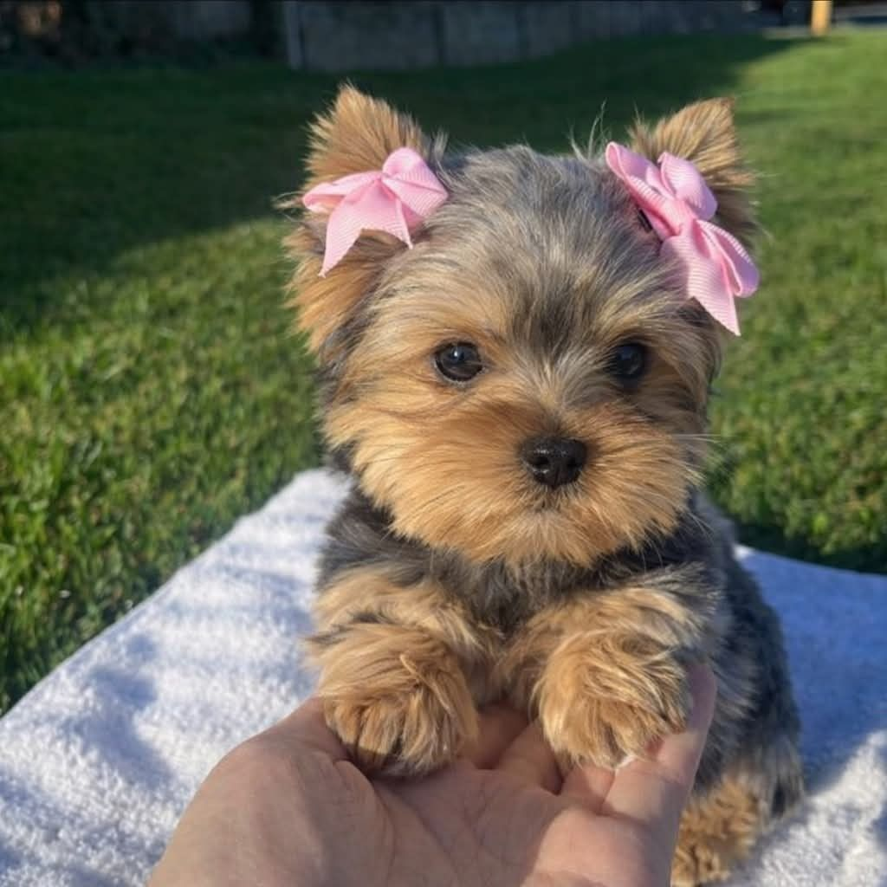
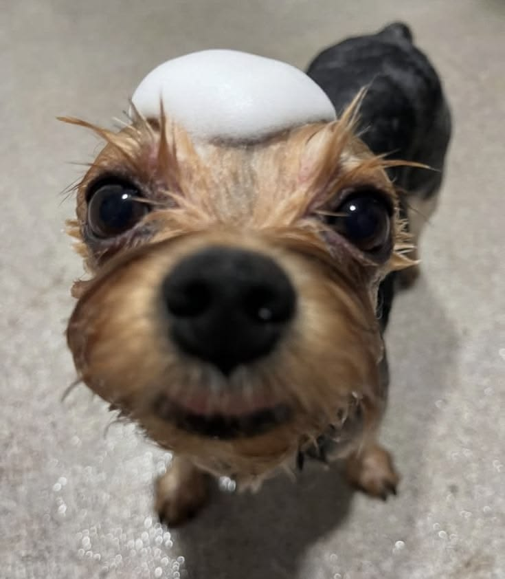
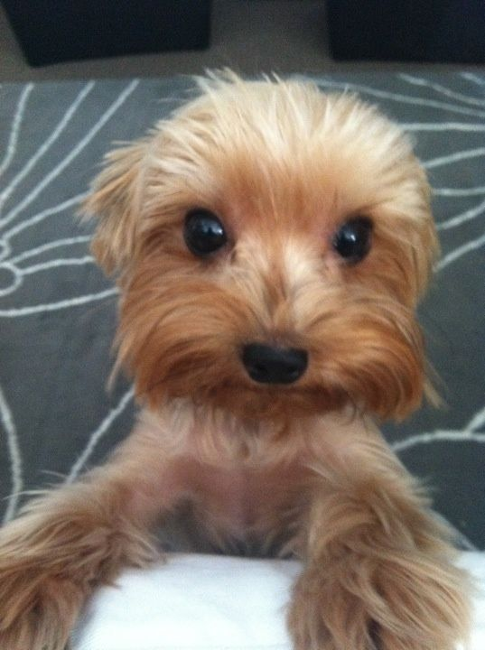

PEQUEÑOS DE TAMAÑO, ENORMES DE CORAZÓN ♡
EL ENCANTO DE UNA GRAN RAZA
Conoce a los Yorkshire Terrier, unos pequeños compañeros que conquistan corazones con su inteligencia, energía y adorable apariencia.
DESCUBRIR MÁS

CONOCE SU HISTORIA
El Yorkshire Terrier es una raza originaria de Inglaterra, donde inicialmente era utilizada para cazar pequeños roedores en fábricas y minas.
Con el paso del tiempo se convirtió en uno de los perros de compañía más populares. Su tamaño pequeño, su pelaje sedoso y su carácter valiente lo hacen inconfundible.
SU FORMA DE SER
Aunque son pequeños, los yorkies tienen cualidades que los convierten en compañeros extraordinarios.
Disfrutan estar cerca de sus dueños y recibir atención y cariño.
Son curiosos y aprenden rápidamente cuando reciben entrenamiento positivo.
A pesar de su tamaño, tienen un carácter seguro y muy decidido.
AMOR Y RESPONSABILIDAD
Para que un Yorkshire Terrier tenga una vida saludable y feliz, necesita atención y algunos cuidados especiales:

YORKIEWORLD ♡
Un espacio creado para celebrar la ternura, inteligencia y personalidad de los Yorkshire Terrier.
VOLVER AL INICIO ↑YorkieWorld © 2026 | Todo sobre los Yorkshire Terrier ♡